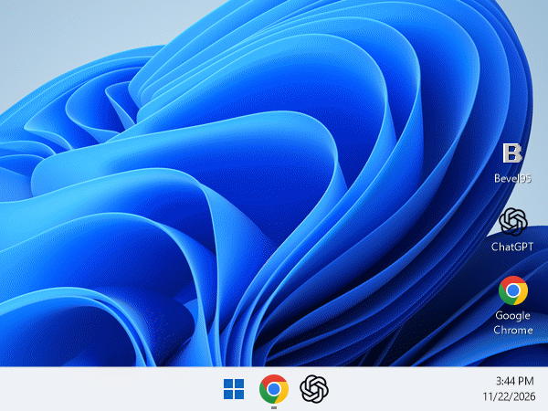

Transform your Windows 10 or 11 desktop into pixel perfect Windows 95/98/2000 without modifying any system files. Read more here.
The file is not signed, so Windows may warn about it: click More info, then Run anyway.
Source and instructions on GitHub · Support Bevel95 · GPL-3.0-or-later · Not affiliated with or endorsed by Microsoft.
